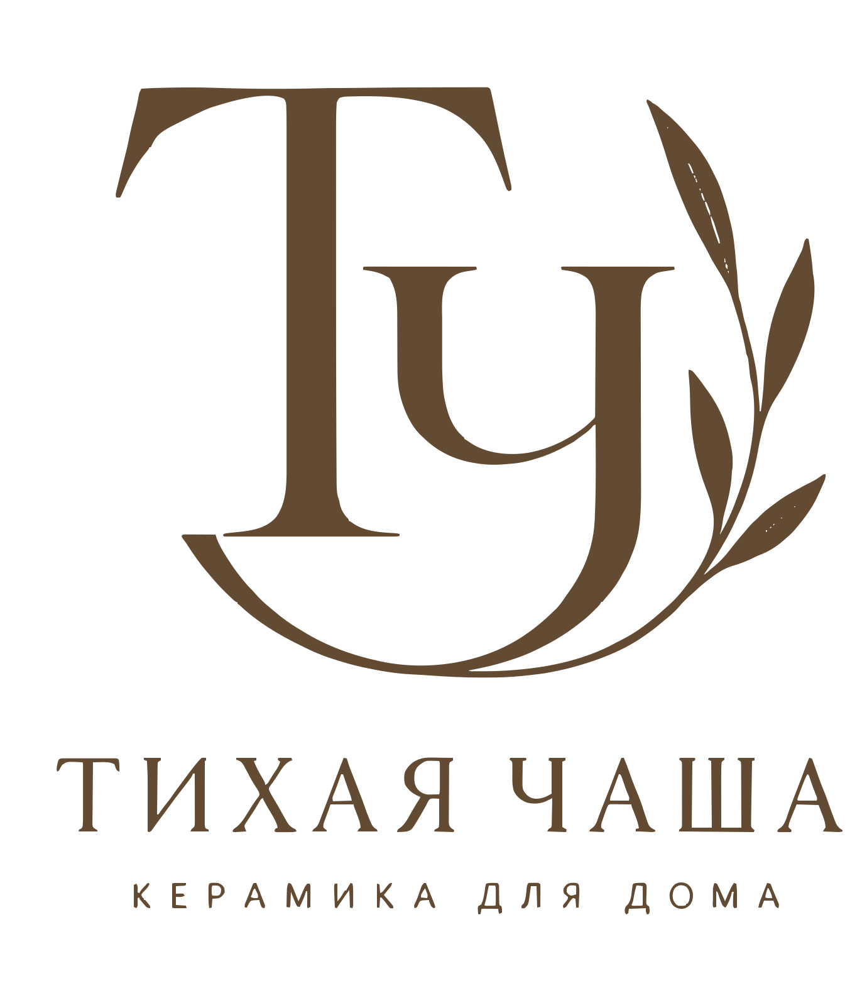
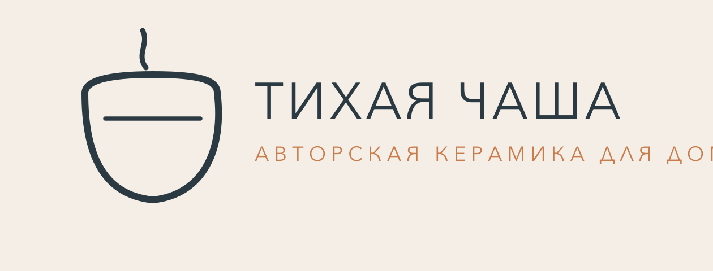
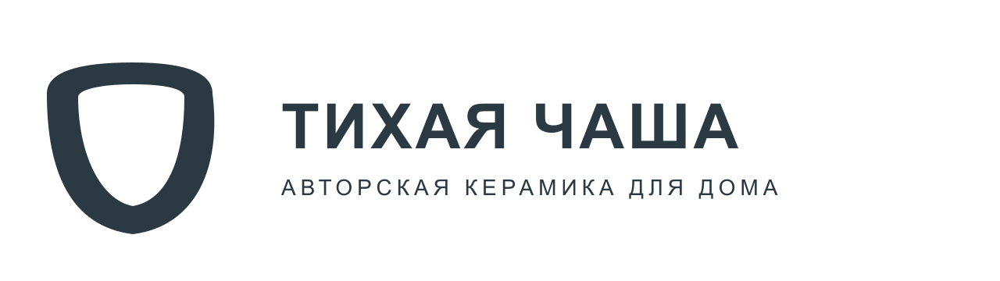

Claude · Логотип
Логотип в Claude: 7 промптов по шагам
Начальный уровень
Когда просишь «сделай красивый логотип», трудно понять, почему получился именно такой знак и что в нём исправлять. Эти семь запросов помогают последовательно выбрать характер марки, форму символа, написание названия и цвета, а затем получить SVG и проверить его на реальном файле.

Для примера возьмём вымышленную марку «ТИХАЯ ЧАША». Она делает керамику для дома. Выбранная концепция - монограмма из букв Т и Ч: нижний изгиб напоминает открытую чашу, а тонкая ветка дополняет знак. Под ним стоят полное название и подпись «КЕРАМИКА ДЛЯ ДОМА».
Открыть SVG логотипа · Открыть SVG символа · Скачать прозрачный PNG.


Перед первым запросом
Для работы нужен аккаунт в Claude. Если вход ещё не настроен, сначала открой инструкцию «Claude из России: подключение без блокировок». Затем создай новый чат. Запиши точное название, что продаёшь, кому и где будешь использовать знак. Отправляй запросы по порядку в одном разговоре: так Claude сможет дорабатывать выбранное решение.
Монограмма - знак из начальных букв названия. SVG - формат, в котором линии и буквы описаны контурами: такой файл можно увеличивать без пиксельной сетки. PNG - изображение для просмотра и отправки; у него может быть прозрачный фон.
Значения в квадратных скобках замени на свои. Внутри скобок уже стоят данные учебной марки.
Ниже показаны промпты для твоего чата и ответы из разбора выбранной монограммы «ТИХОЙ ЧАШИ». Ответы Claude сокращены по смыслу; после них отдельно указано, что мы оставляем в учебном примере. Для своей марки замени название, товар, аудиторию и желаемый характер оформления. После каждого ответа выбери подходящий вариант и напиши Claude, что именно оставляешь. Следующий запрос должен продолжать твой выбор, иначе модель может начать другую концепцию.
1. Основа бренда
Сначала Claude должен понять задачу марки и предложить варианты устройства логотипа. Словесный знак состоит из названия, монограмма - из его начальных букв, отдельный символ может стоять рядом с названием. Пока выбираем именно устройство знака; художественный стиль уточним следующим запросом.
Разработай концепцию логотипа для «[ТИХАЯ ЧАША]». Это [авторская керамика для дома]. Покупатели [ценят простые формы, тактильность и долговечность]. Логотип нужен для [упаковки, бирки и аватарки]. Сравни три направления: словесный знак, монограмму и отдельный символ рядом с названием. Для каждого опиши смысл, форму, преимущества и слабое место. Пока не выбирай окончательный стиль и цвет. Дай варианты, чтобы я мог выбрать направление
Ответ Claude: марка рассчитана на покупателей, которым близки спокойное оформление дома и сдержанная эстетика. Керамика связана с повседневной паузой и вниманием к материалу.
Результат: мы выбираем монограмму ТЧ, потому что хотим связать символ с названием и использовать его отдельно на бирке и в аватарке.
Посмотри варианты Claude и выбери один под свою задачу. Следующий промпт начинается с выбранного направления. В нашем примере это «монограмма ТЧ»; если выбрано название без символа, впиши «словесный знак».
2. Стиль логотипа
На первом шаге ты выбрал, из чего состоит логотип. Сейчас выбираешь художественный стиль. И монограмма, и полное название могут быть строгими геометрическими, рукописными или выполненными в ретро-стиле. Люксовый минимализм - ещё один возможный вариант оформления.
Для учебной «ТИХОЙ ЧАШИ» мы выбираем люксовый минимализм: в брифе спокойная керамика, простые формы и внимание к материалу. Поэтому в показанном образце используем изящные буквы, сдержанный цвет и свободное поле. Это выбор для этой марки, а не обязательное условие работы в Claude.
Перед отправкой замени стиль в скобках на нужный тебе. Например, для другой задачи здесь могут стоять «игривый иллюстративный стиль», «ретро» или «строгая геометрия». Если пока не знаешь, попроси Claude сравнить три стиля для твоего брифа и выбери один из ответа.
Продолжим выбранное направление: [монограмма ТЧ] для «[ТИХАЯ ЧАША]». Желаемый стиль - [люксовый минимализм]. Он должен передавать [спокойствие, внимание к материалу и сдержанность]. Предложи три варианта в этом стиле. Для каждого опиши форму, толщину линий, характер букв и количество деталей. Объясни, как вариант соответствует брифу. Пока не выбирай окончательный цвет
Ответ Claude: ограничить состав монограммой ТЧ, тонкой веткой и названием с увеличенными интервалами. Свободное поле и соотношение широких и тонких штрихов должны заменить дополнительные украшения.
Результат: для нашего примера оставляем контраст тонких и широких штрихов, изящное начертание и свободное пространство. Нам не нужны тяжёлая рамка и множество украшений.
Выбери один из предложенных вариантов и сообщи Claude, что сохраняешь. Дальше дорабатывай его в том же стиле. Если хочется сменить стиль, сделай это сейчас и повтори этот шаг, прежде чем переходить к буквам и символу.
3. Словесный знак
После выбора стиля отдельно уточняем написание полного названия. Оно понадобится и в логотипе с символом, и в варианте без него. Подпись под названием необязательна: если её не будет, замени значение в скобках на «без подписи».
Для выбранной концепции в согласованном стиле разработай написание «[ТИХАЯ ЧАША]». Подпись под названием - [КЕРАМИКА ДЛЯ ДОМА]. Предложи три варианта начертания, которые соответствуют нашему стилю. Сравни форму кириллических букв, насыщенность и интервалы. Покажи, как название сочетается с выбранным направлением логотипа. Сохрани название и подпись целиком, с полями справа и слева. Объясни сильные и слабые стороны вариантов
Ответ Claude: подпись нужно сделать второстепенной по отношению к монограмме и увеличить интервалы между её буквами. Здесь важно проверить сам рисунок букв: антиква означает шрифт с засечками, гротеск - без них.
Результат: в нашем примере выбираем заглавные буквы с засечками и увеличенными интервалами. Подпись делаем заметно мельче и проще по форме, чтобы она оставалась второстепенной.
Прочитай название и подпись без подсказки. Выбери начертание и напиши Claude, какое оставляешь. Если буквы трудно разобрать, попроси упростить их в рамках выбранного стиля.
4. Смысл символа
Этот шаг зависит от выбранного направления. Для монограммы уточняем буквы, для отдельного символа - его форму и связь с товаром. Если ты выбрал только название, не добавляй символ автоматически: попроси объяснить смысл деталей самого написания. В промпте замени оба поля: тип знака и идею, которую должны выражать его детали.
Уточни смысл нашей выбранной концепции: [монограмма ТЧ]. Связь с маркой должна выражаться через [нижний изгиб Ч, похожий на неглубокую открытую чашу]. Сохрани читаемость и согласованный стиль. Объясни, какие детали нужны для узнавания, а какие можно убрать. Предложи вариант с минимумом дополнительных элементов и назови риск сходства с другими знаками. Если мы выбрали только словесный знак без символа, разбери детали написания и не добавляй иконку без моего выбора
Ответ Claude: нижняя дуга Ч может напоминать чашу, а ветка - добавлять природный мотив. При этом ветка остаётся дополнительной деталью, а не основанием узнаваемости.
Результат: в показанном образце чаша встроена в изгиб Ч. Ветку оставляем как дополнительный мотив. Основной знак должен сохранять смысл и без неё.
Опиши себе, что видно в символе без пояснения. Если видишь другой предмет или не можешь прочитать буквы, верни это наблюдение Claude и выбери исправленный вариант до следующего шага.
5. Работа в любом размере
Теперь определяем версии для тех мест, которые указаны в брифе. Длинное название на упаковке и крошечная иконка требуют разной детализации. Компактная версия не обязана быть отдельной монограммой, если ты выбрал другой тип знака.
Для согласованной концепции «[ТИХАЯ ЧАША]» опиши полную версию для [упаковки и страницы сайта] и компактную для [аватарки и иконки]. Сохрани выбранный стиль. Объясни, какие элементы оставить, убрать или утолщить в размерах 32 × 32 и 16 × 16 пикселей. Если в нашей концепции нет отдельного символа, предложи компактное решение на её основе, не меняя направление без согласования. На этом шаге дай описание каждой версии и отличий. SVG-код подготовим после критики, читаемость проверим на файле
Ответ Claude: на 32 пикселях оставить монограмму и дугу-чашу, упростив ветку; на 16 пикселях убрать ветку и весь текст. Мелкие детали иначе потеряются при уменьшении.
Результат: для нашего примера полный знак включает монограмму, название и подпись. Для маленькой версии убираем текст, а затем ветку и мелкие изгибы. Это решения для выбранной монограммы ТЧ.
Для этой страницы отдельно сохранена компактная монограмма без ветки и текста. Ниже она показана в своих настоящих размерах, без увеличения:
Сверь предложенные версии со своими местами использования. Если тебе нужна только вывеска, не придумывай иконку ради этого примера. Если иконка нужна, оставь её отдельной задачей для финального SVG.
6. Цвета по психологии восприятия
Цвет выбираем под характер марки и уже согласованную форму. Спокойная коричневая палитра подходит нашему учебному примеру; для другого настроения нужно заменить пожелания в промпте.
Подбери три палитры для согласованной концепции «[ТИХАЯ ЧАША]». Нужное впечатление - [спокойствие, тепло и связь с материалом]. Сохрани выбранный стиль. Для каждой палитры дай основной цвет, фон и необязательный акцент с HEX-кодами. Объясни предполагаемые ассоциации и место каждого цвета. Предусмотри одноцветную версию. Не обещай одинаковой психологической реакции у всех покупателей
Ответ Claude: коричневый #634A32 связать с глиной, терракотовый #C97B4A использовать как тёплый акцент, светлый #F4EEE6 оставить фоном. Акцент не должен конкурировать с основной монограммой.
Результат: для нашего образца выбираем коричневый #634A32 для знака и светлый #F4EEE6 для фона. Терракотовый #C97B4A можно оставить для упаковки. В самом логотипе используем один коричневый.
Сравни палитры рядом с товаром и на предполагаемом фоне. Сообщи Claude коды выбранной палитры, чтобы в финале он использовал их, а не предложил новые цвета.
7. Критика как креативный директор
К этому моменту у тебя согласованы направление, стиль, буквы, детали, версии и палитра. Теперь просим проверить, как они работают вместе, и внести конкретные правки перед выдачей файла. В последнем поле промпта перечисли только те версии, которые тебе нужны.
Раскритикуй согласованную концепцию «[ТИХАЯ ЧАША]» как креативный директор. Проверь соответствие исходному брифу и выбранному стилю, читаемость названия, смысл деталей, расстояния и компактную версию. Назови главные недостатки и предложи до трёх правок, не меняя выбранное направление. Внеси правки и выдай полный SVG-код каждой согласованной версии: [полный логотип с названием и подписью; отдельная монограмма]. Используй выбранную палитру, xmlns и viewBox. Оставь прозрачный фон и достаточные поля. Нужны векторные контуры, без встроенной растровой картинки и внешних файлов. Каждый SVG помести в отдельный блок кода
Ответ Claude: ветка может конфликтовать с дугой Ч при уменьшении, а слишком большие интервалы могут визуально разделить подпись. Нужно зафиксировать положение ветки в полной версии и ограничить интервалы подписи.
Результат: в нашем примере проверяем, не сливается ли ветка с изгибом Ч, не выходит ли подпись за край и какие детали теряются при уменьшении. Правка должна отвечать на конкретный недостаток: удалить элемент, изменить расстояние или увеличить поле.
Сверь исправленный вариант с решениями предыдущих шагов. Если Claude внезапно сменил стиль или добавил невыбранную деталь, попроси вернуть согласованный вариант. После этого переходи к сохранению SVG.
Как получить файл из ответа Claude
После седьмого запроса в ответе должен появиться полный код, который начинается с тега SVG и заканчивается закрывающим тегом. Если Claude дал только описание, напиши: «Теперь выдай полный SVG-код выбранного варианта в отдельном блоке, чтобы я мог сохранить файл».
- Скопируй код первого SVG в текстовый файл и сохрани его как logo-full.svg. Проверь, что к имени не добавилось .txt.
- Если заказывалась компактная версия и Claude выдал второй блок, сохрани его как logo-icon.svg. Если нужна только одна версия, второго файла не требуется.
- Открой оба файла в браузере. Прочитай название и подпись целиком, посмотри на пропорции и расстояния между элементами.
- Если видишь ошибку, прикрепи изображение результата в этот же чат и назови её точно: «Подпись обрезана справа», «Символ ниже названия» или «В маленьком размере буквы слились». Попроси исправленный полный SVG.
- Для PNG вернись в тот же чат и отправь запрос ниже. Claude должен приложить отдельный файл logo-full.png, а не только показать код или описание. Нажми на приложенный файл и скачай его. SVG сохрани как исходник.
Возьми согласованный SVG последней версии и конвертируй его в PNG шириной [1600] пикселей. Сохрани пропорции и прозрачный фон. Не меняй форму, буквы, цвета и расположение. Создай настоящий файл logo-full.png и приложи его к ответу для скачивания
Если вместо файла Claude снова дал описание, открой Settings → Capabilities и проверь, что включено Create and edit files (в другой раскладке Code execution and file creation). Затем вернись в тот же чат и повтори запрос на PNG. Названия настройки приведены в официальной справке о создании файлов.
Открой скачанный PNG. Белая страница просмотрщика ещё не означает белый фон самого файла: проверь изображение на цветной подложке. Если фон оказался частью изображения, верни PNG в чат и попроси убрать фоновый прямоугольник, сохранив знак.
Пример исправления: подпись обрезана справа
В ранней попытке для этой марки Claude выдал SVG с холстом 420 × 160. Длинная подпись не поместилась: её конец оказался за правой границей.

Мы вернули замечание об обрезанной строке и попросили увеличить холст и выдать полный SVG заново. В следующем ответе Claude задал размер 640 × 180.

Такое же действие нужно повторить со своим результатом: открыть файл, назвать видимый недостаток и запросить исправленный полный код. Сам факт появления SVG ещё не означает, что композиция получилась удачной.
Векторная версия примера доступна здесь: логотип в SVG, символ в SVG, прозрачный PNG, иконка 32 × 32, иконка 16 × 16. В SVG используются контуры: это не картинка, помещённая внутрь файла с другим расширением.


Что проверить перед использованием
На большом изображении должны читаться название и подпись, а символ должен стоять согласованно с текстом. Если знак будет использоваться в маленьком размере, проверь отдельную упрощённую версию. Если детали исчезают, верни файл на доработку.
Перед коммерческим использованием проверь сходство с зарегистрированными знаками, условия использования шрифта и требования типографии. Семь запросов помогают пройти от идеи до файла, а качество результата оценивается после его открытия.
Если файл получился не таким, как ожидалось
| Что видно | Что сделать в том же чате |
|---|---|
| Claude дал только описание | Попроси полный SVG-код выбранного решения в отдельном блоке. |
| Браузер показывает текст | Проверь расширение: logo-full.svg, без добавленного .txt. |
| Подпись обрезана | Попроси увеличить поле справа и ширину viewBox, затем выдать весь исправленный SVG. |
| Символ ниже названия | Попроси выровнять оптические центры символа и текстового блока. |
| В иконке слились детали | Попроси упростить согласованную компактную версию: убрать мелкие детали и проверить толщину линий. |
| У PNG белая подложка | Проверь, что в SVG нет фонового прямоугольника, и экспортируй PNG с прозрачностью. |
Если не получается объяснить ошибку, скопируй этот запрос и заполни скобки:
Я хочу получить [логотип с читаемым названием и прозрачным фоном]. Уже выполнено [сохранил SVG и открыл его в браузере]. Сейчас вижу [опиши результат или приложи изображение]. Не понимаю [что именно мешает]. Объясни следующий шаг простыми словами, по одному действию. После него дождись моего ответа
Памятка перед использованием логотипа
- Название и, если она есть, подпись написаны без ошибок, крайние буквы видны целиком.
- Символ и текст согласованы по размеру и положению.
- Если нужны полный знак и иконка, они сохранены разными файлами.
- Если нужна маленькая версия, она читается в том размере, где будет использоваться.
- Векторный SVG и прозрачный PNG открываются после скачивания.
- Перед коммерческим использованием проверены сходство с другими знаками, лицензия шрифта и требования типографии.
Частые вопросы
Можно ли получить SVG прямо в Claude?
Да. Попроси полный SVG-код, скопируй его в файл с расширением .svg и открой в браузере. Если появился только текст с идеями, повтори просьбу о коде файла.
Почему один запрос не даёт нужный результат?
В коротком запросе мало условий для выбора формы. Семь шагов последовательно уточняют марку, выбранный стиль, буквы, символ, цвет и ограничения. После открытия файла всё равно нужно оценить получившийся рисунок.
Для чего хранить и SVG, и PNG?
SVG нужен для масштабирования и правок контуров. PNG проще открыть, отправить и поставить в макет, который принимает изображения. Экспорт PNG не заменяет исходный SVG.
Можно ли сразу отправить файл в печать?
Сначала уточни требования типографии. Может понадобиться другой цветовой режим, минимальная толщина линий или подготовка под конкретный способ нанесения.
Источники
Дополнительные сведения о форматах и работе с результатом. Для выполнения семи запросов читать документацию отдельно не требуется.
- Справка Claude об артефактах: отдельное окно для результата, редактирование и экспорт.
- Стандарт SVG, W3C: описание векторного формата.
После логотипа проекту понадобятся сайт, тексты и материалы для покупателей. Ниже - что ещё можно собрать с нейросетью, если не знаешь кода.
Что можно делать с нейросетями, если не знаешь кода?
Чтобы почувствовать размах, посмотри Концентрат Ивана Сергеева. ИИ-агенты на твоих глазах собирают продукт, контент, сайты и воронки без кода. Это основа под любую цель: свои услуги, партнёрка, чужой бизнес. Три дня бесплатно, VIP с четвёртым днём - 990 ₽
Забрать КонцентратУже знаешь, чего хочешь? Тогда в мастер-группу Ивана: система продаж на ИИ без продюсера и технаря, сопровождение и сообщество
Заполнить анкету предзаписиНабор открывается редко, кто записался заранее, получает лучшую цену и бонусы. Платить сейчас не нужно
Реклама. ИП Сергеев И. С., ИНН 352511695540. erid: 2Vtzqvk2p6q